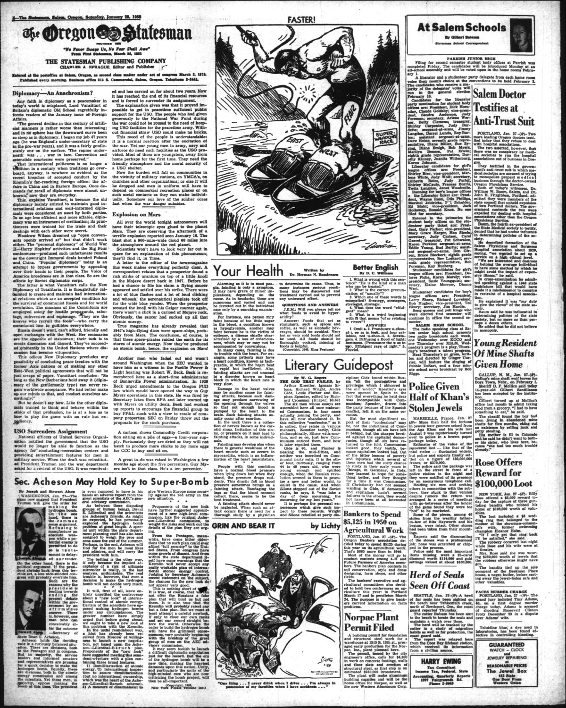
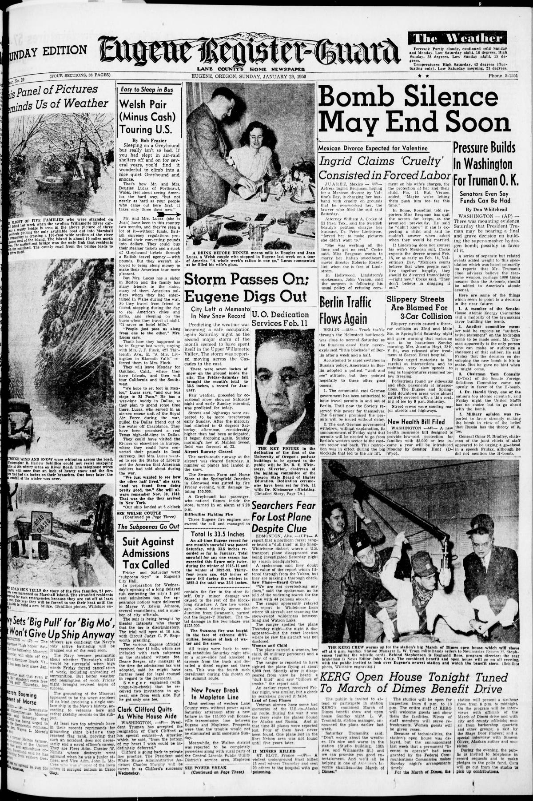

HN HN-577 · January 29, 1950 · Politics, Government & Diplomacy > Legislation & Government Policy > Policy debates and public response
Source: Indianapolis Times, p. 1 — original page; Truman Presidential Library, January 31 policy statement.
Report: “Hoosiers Dread Idea of Hydrogen Bomb but They Want Weapon in U.S. Arsenal†quoted residents fearing that the USSR would build the weapon if America did not.
Assessment: On January 31, Truman publicly directed continued development of thermonuclear weapons. That decision was not evidence an operational American hydrogen bomb already existed; the first full-scale U.S. thermonuclear test came in 1952. The newspaper quotes a small set of interviewees, not a scientific opinion poll.
Authentic scans retrieved from Historic Oregon Newspapers (University of Oregon). Article crops are located using the archive's own ALTO OCR word coordinates and rendered at native crop resolution; page scans are 1,200-pixel-wide renditions. No images were generated, mocked, or retouched.


Not yet acquired. Queued for provider-specific acquisition testing (see source-acquisition manifest).
URL (preserved verbatim): https://newspapers.library.in.gov/?a=d&d=IPT19500129.1.1
Saved research report: Historical_Newspaper_Event_Research_553-577_2026-10-23.md
Evidence note: A newspaper report means a historical publication made a claim; it does not establish that claim as fact. Contemporary reporting is separated from later scholarly context and our own assessment.